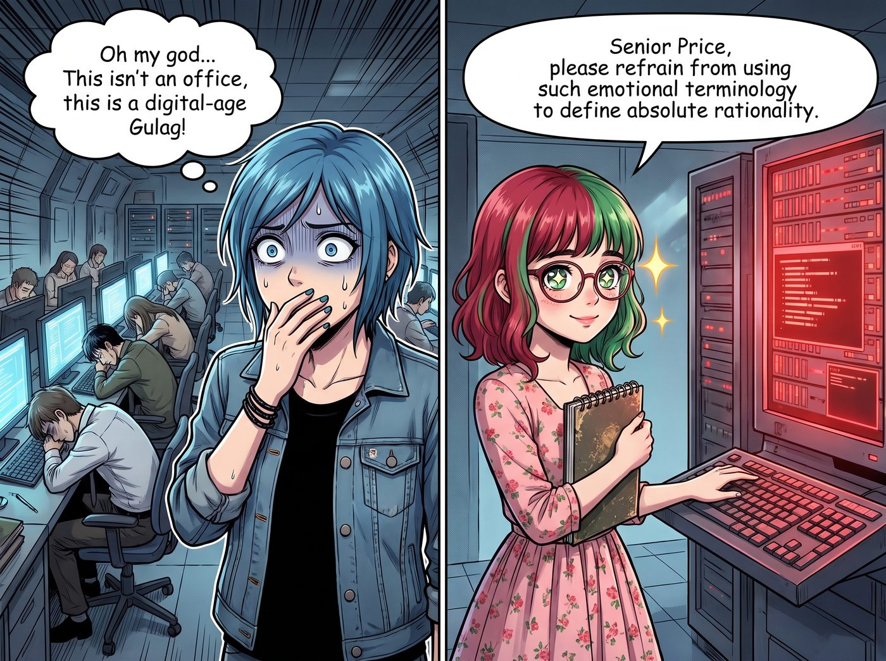

賽博監獄的行政酒廊

當 Mr. V 將三張印著Level 9戰略風控指揮中心的高級訪客感應牌遞給她們，並推開那扇厚重的防爆玻璃門時，一股極度冰冷、乾燥且充滿了伺服器散熱風扇嗡嗡聲的空氣撲面而來。
呈現在眾人眼前的，是一個宛如科幻電影裡賽博監獄般的龐大地下空間。沒有自然光，沒有綠色植物，只有數百個被高高隔開的黑色辦公位。牆壁上掛著幾十塊巨大的LED螢幕，上面像瀑布一樣滾動著全球每秒數萬筆的交易數據、紅色高風險警報，以及即時更新的各國反洗錢封鎖名單。每一位員工都戴著降噪耳機，面無表情地盯著三個以上的螢幕，手邊的計時器精準地倒數著他們處理每一筆可疑交易的平均處理時間。
「這就是我們的神經中樞。」Mr. V 驕傲地張開雙臂，宛如在展示凡爾賽宮的國王，「這裡每天攔截超過兩百億美金的潛在欺詐。每一個數據節點，都被嚴格的合規演算法和生物辨識探測器所監控。」
一、數位時代的古拉格
「我的老天……」Chloe 倒抽了一口冷氣，感覺自己身上的每一根反骨都在尖叫，「這不是辦公室，這是數位時代的古拉格勞改營！這些人看起來就像是連上廁所都需要打申請報告的代碼奴隸！」
「Price 學姐，請不要用如此情緒化的詞彙來定義絕對的理性。」
Lily 此刻已經完全沉浸在了這個環境中。她那雙大眼睛在螢幕反光的映照下，閃爍著宛如朝聖般的狂熱光芒。她甚至情不自禁地走到一個正在閃爍紅色警報的終端機前。
「太美了……」Lily 痴迷地看著螢幕上的數據流，「你們居然在底層應用了馬爾可夫鏈來預測跨國洗錢的資金路徑？而且這個異常行為熔斷機制的延遲竟然低於12毫秒！」
「Lily 小姐果然是行家！」Mr. V 激動地湊過去，兩個人開始對著螢幕上那堆普通人看一眼就會腦溢血的代碼指指點點。
「對！但我們最近遇到了一個瓶頸，歐盟那邊的法規限制了我們對第四層代理伺服器的穿透追蹤……」
「這很簡單，Mr. V。你們只需要在愛爾蘭註冊一個數據匿名化處理信託，利用他們的稅務和隱私豁免條款做跳板……」
二、逃離窒息空間
看著這兩個行政怪物在賽博監獄裡聊得熱火朝天，彷彿在迪士尼樂園裡討論該先玩哪一個雲霄飛車，剩下的三個人經歷了強烈的生理不適。
Max 抱著相機，覺得這裡的空氣都在榨乾她的藝術細胞。每一秒鐘，她的心跳、呼吸、甚至眼神的落點，彷彿都被頭頂那些密密麻麻的監視攝影機轉化成了可以被變現或封鎖的數據。
「我快不能呼吸了。」Max 虛弱地抓住 Victoria 的袖子，「這裡沒有任何瑕疵，也沒有任何靈魂。如果地獄有模樣，一定就是這種滿是LED螢幕和KPI計時器的樣子。」
Victoria 作為資本家，雖然理解這種高壓環境的產出價值，但她作為老錢名媛的審美和階級自尊，絕對不允許她跟這些可憐的數據礦工待在同一個空間超過十分鐘。
「Mr. V。」Victoria 優雅地清了清嗓子，打斷了那兩個正在設計如何合法監聽半個歐洲金融網路的瘋子，「我非常欣賞貴公司的勞動密集型數位產業。但我現在有點低血糖，我想貴總部應該配備了符合我們這種級別訪客的……非刑訊逼供區？」
Mr. V 愣了一下，隨即抱歉地笑了笑：「當然，Chase 小姐。頂層有我們為鑽石級合作夥伴準備的米其林行政酒廊，無限量供應頂級香檳和藍鰭鮪魚。您和您的朋友們可以先去那裡休息，我讓秘書為您帶路。我和 Lily 小姐還需要深入探討一下關於動態信貸阻斷的演算法。」
「太好了。我們走。」
Victoria 毫不猶豫地轉身，Chloe 和 Max 像逃難一樣緊緊跟在她身後，頭也不回地衝出了那個讓碳基生物窒息的風控中心。
三、無名騎士的浪漫
十分鐘後。
在位於大樓四十五層、擁有三百六十度無死角灣區海景的豪華行政酒廊裡，Chloe 癱在義大利真皮沙發上，猛灌了一大口冰鎮香檳，終於覺得自己活了過來。Victoria 正優雅地品嚐著魚子醬，而 Max 則坐在全景落地窗前，用拍立得拍著外面的金門大橋。
她們面前的平板電腦上，正亮著與二號車廂的視訊通話。
Kate 正在螢幕那頭折著紙鶴，聽完她們對賽博監獄的驚恐描述後，小天使溫柔地笑了笑。
「妳們看，這就是每個人尋找快樂的方式不同呀。」Kate 透過螢幕，彷彿能看到樓下那個正在和 Mr. V 瘋狂編寫風控規則的 Lily，「那些在螢幕前努力工作的人，還有 Lily 和 Mr. V，他們就像是守護這個世界財富的無名騎士。雖然騎士的城堡又冷又硬，但他們在裡面討論著如何保護大家不被壞人騙走錢財，這本身就是一件充滿了愛與奉獻的浪漫事情呢。」
Chloe 聽著這番聖光普照的發言，看了一眼手裡昂貴的香檳，又看了一眼樓下大廳的方向。她決定永遠不要去理解那種在監獄裡修改世界規則的極致快樂。
「不管怎樣，」Chloe 舉起酒杯，和 Victoria 碰了一下，「敬行政酒廊，敬魚子醬，還有……敬那個代替我們去忍受這一切的粉色小熊惡魔。」